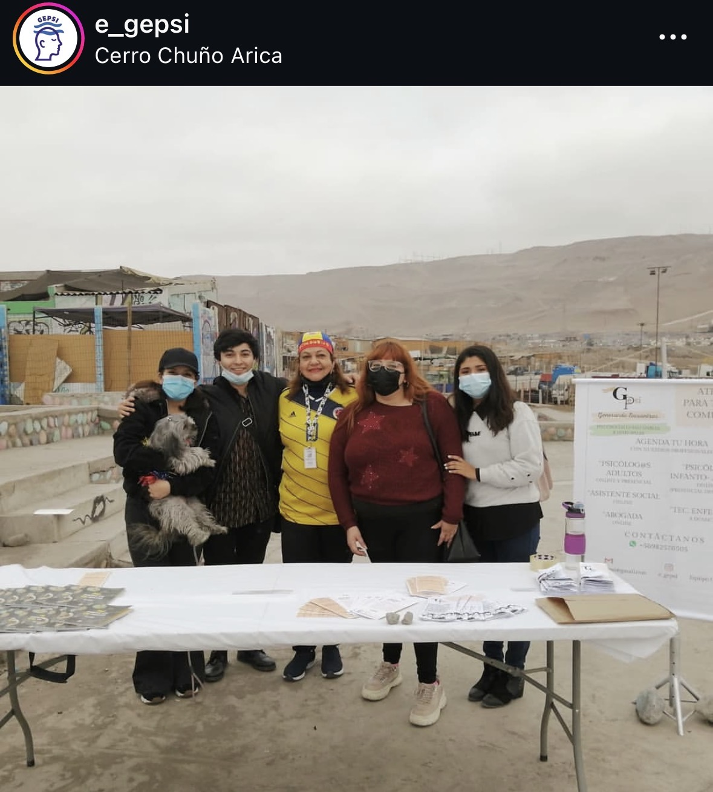
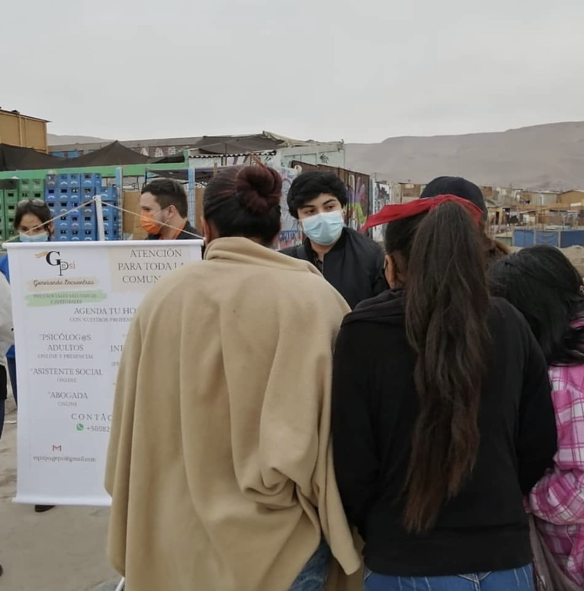
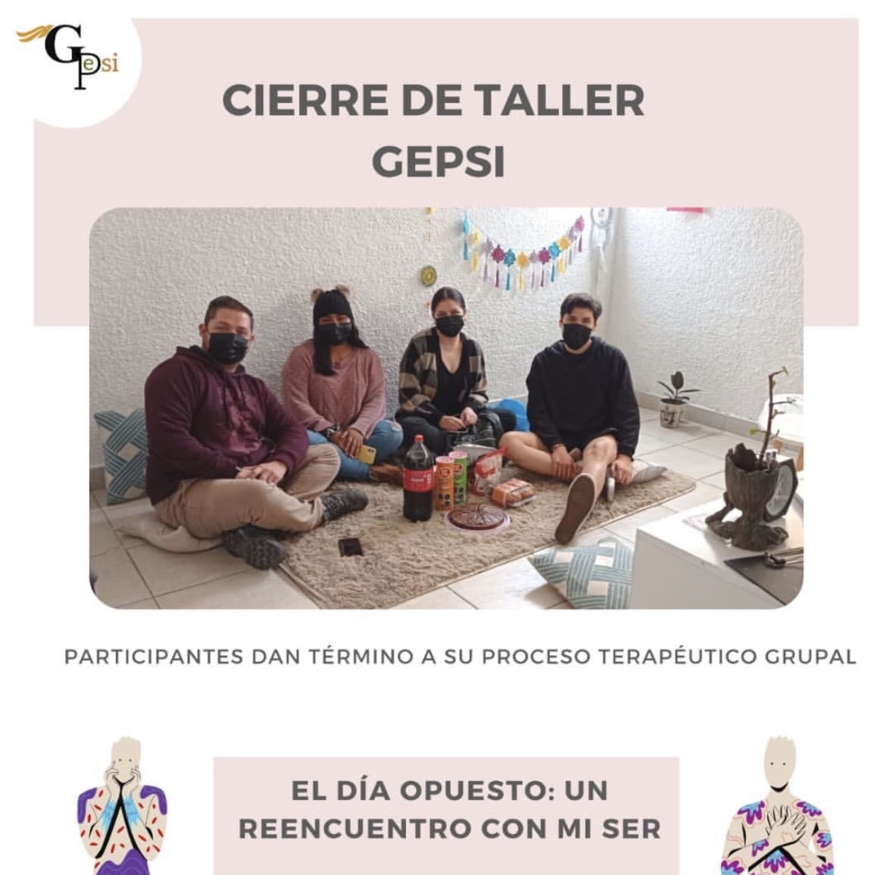
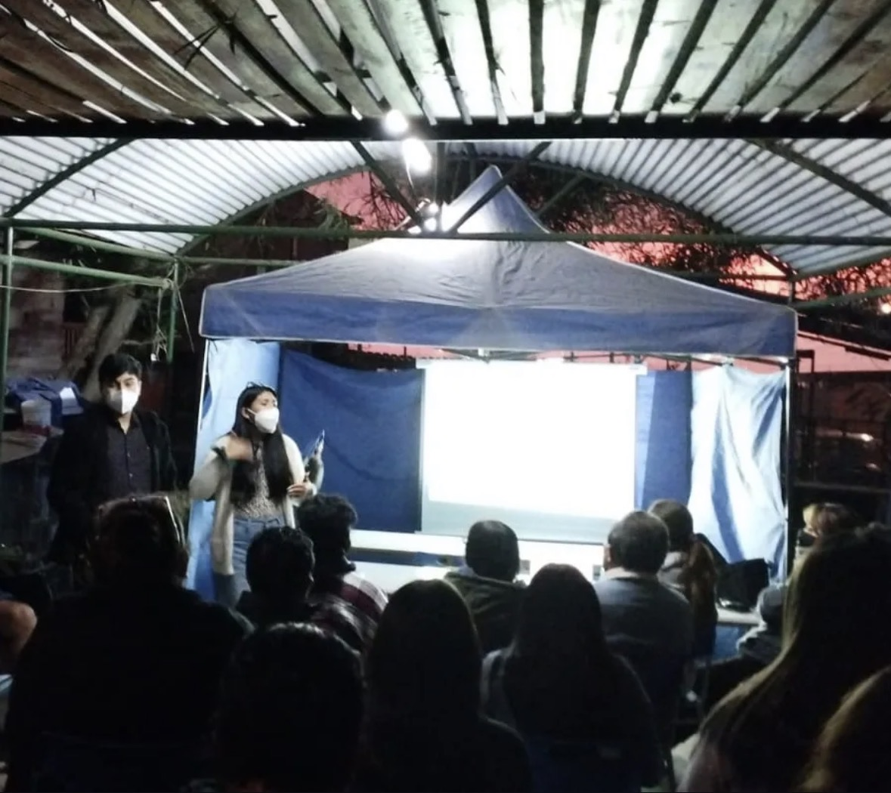

Nuestro trabajo en la comunidad
Espacios grupales orientados al acompañamiento emocional y al fortalecimiento de recursos personales.

Intervenciones en juntas de vecinos y organizaciones territoriales.


Participación en ferias, incluyendo actividades con comunidades migrantes.
